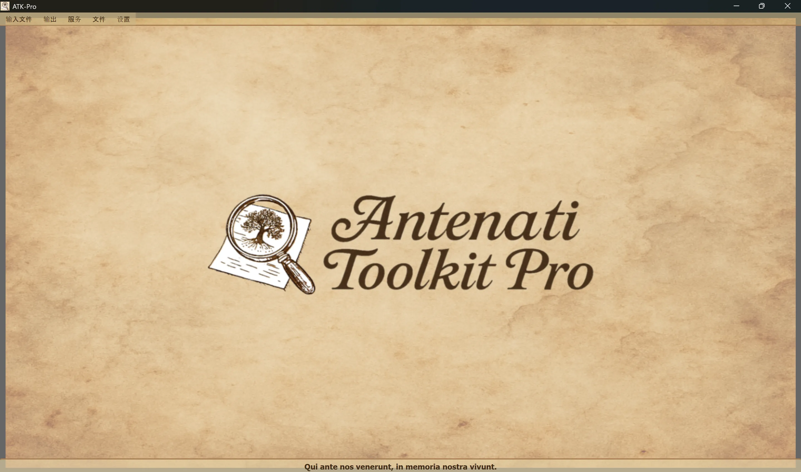

────────────────────────────────────────────────────────────────────────────────
🪟 Windows
ATK-Pro-Setup-vx.x.x.exe 从官方发布页面🐧 Linux
ATK-Pro-vx.x.x.deb (德比安/乌邦图)或 .tar.gz 从发行页面sudo dpkg -i ATK-Pro-vx.x.x.deb 或双击 Nautilus/ Files./ATK-Pro 从已提取文件夹中🍎 macOS
ATK-Pro-vx.x.x.dmg 从发行页面🪟 Windows
C:\Program Files\ATK-Pro\C:\Users\[TuoNome]\Documents\ATK-Pro\output\C:\Users\[TuoNome]\Documents\ATK-Pro\input\🐧 Linux
/opt/ATK-Pro/ (deb)或提取文件夹(.tar.gz)~/Documents/ATK-Pro/output/~/Documents/ATK-Pro/input/🍎 macOS
/Applications/ATK-Pro.app~/Documents/ATK-Pro/output/~/Documents/ATK-Pro/input/────────────────────────────────────────────────────────────────────────────────
现有语言有:
根据2025年底的现有数据,估计它能够覆盖世界各地意大利人和意大利人或意大利人后裔的98%。
当您第一次运行时, 程序会自动创建以下文件夹 :
C:\Users\[TuoNome]\Documents\ATK-Pro\output\C:\Users\[TuoNome]\Documents\ATK-Pro\output\doc\ (违约文件)C:\Users\[TuoNome]\Documents\ATK-Pro\output\reg\ (违约登记册)~/Documents/ATK-Pro/output/input\ 模拟( 可选, 文件输入)处理临时文件夹时,可下载瓷砖(tiles_canvas_X/),如果需要的话,PDF,为其生成的临时文件.
所有临时文件夹和文件都会在处理结束时自动删除.
仅保留已处理的最后文件(以选定格式、PDF、海报和元数据为图像)。
要更改输出文件夹,请使用菜单 → 设置 → “ 选择输出文件夹 ” 。 选择被存储并自动恢复到下一个会话.
命令 设置 ~ 资源配置 规范下载、图像重建和 PDF 生成过程中使用的并行性 :
简介不改变所取得文件的质量、权利或数量。 门户网站的具体审慎限制仍然具有优先地位。
────────────────────────────────────────────────────────────────────────────────
Antenati Toolkit Pro的主窗口结构简单直观.

拉丁格言“Qui ante nos venerunt,以纪念我们的活力”,回顾了根基和集体记忆的重要性。
在窗顶,头下面:
[文件输入] [产出] [服务] [文件] [定
每个菜单都包含特定的按钮和选项(见下一节).
管理 IIIF 记录的加载 :
├─ Esempio input
│ └─ Visualizza il file di esempio (mostra formato coppie: modalità D/R + URL)
├─ Apri input
│ └─ Seleziona un file .txt con i tuoi record IIIF
│ (Deve contenere coppie: modalità D/R su riga 1, URL su riga 2)
└─ Modifica input
└─ Modifica il file input attualmente caricato
(Aggiungi/rimuovi record, cambia URL, salva modifiche)
管理处理和输出 :
├─ Elabora │ └─ Avvia il download, la ricostruzione e il salvataggio delle immagini │ (Mostra finestra di progresso in tempo reale) ├─ Apri cartella output │ └─ Apre in Esplora Risorse la cartella con i file elaborati └─ Visualizza elaborazioni precedenti └─ Lista dei record già elaborati
综合服务清单:
├─ Ricerca assistita AI │ └─ Suggerisce portali, piste di ricerca e query genealogiche da verificare ├─ Visualizzazione Immagini │ └─ Viewer immagini scaricate e/o PDF generati ├─ Visualizzazione Metadati JSON │ └─ JSON originali e metadati (genealogici, tecnici, EXIF) ├─ OCR Avanzato │ └─ Testi manoscritti ottocenteschi, latino ecclesiastico, tardo-medievali ├─ Traduzione OCR │ └─ Traduzione automatica testi estratti nelle lingue selezionate └─ Esportazione GEDCOM └─ GEDCOM, Gramps, Family Tree Maker, Ancestry, MyHeritage, WikiTree, etc.
获取资源和文件:
├─ Disclaimer - Clausole legali e termini d'uso ├─ Presentazione autore - Background dell'autore del progetto ├─ Presentazione progetto - Storia, motivazioni, roadmap di ATK-Pro ├─ Guida - Indice principale della guida modulare └─ Informazioni - Versione, copyright, email di contatto
程序的一般配置 :
├─ Cambia lingua
│ └─ Seleziona la lingua dell'interfaccia (richiede riavvio)
├─ Seleziona formati immagine
│ └─ Scegli tra PNG, JPG, TIFF e PDF (almeno 1 obbligatorio)
│ PDF può essere selezionato da solo o insieme ai formati immagine
│ La scelta viene memorizzata e pre-selezionata automaticamente alla sessione successiva
├─ Seleziona cartelle output
│ └─ Apre prima la scelta della modalità cartelle, poi le finestre di selezione:
│ • Cartella unica per tutti → una sola cartella per documenti e registri
│ • Cartelle separate doc/reg → una cartella per tutti i doc, una per tutti i reg
│ • Cartella per ogni record → una cartella distinta per ciascun record
│ La modalità e le cartelle vengono memorizzate e ripristinate alla sessione successiva
├─ Esporta configurazione
│ └─ Salva le impostazioni attuali in un file
├─ Importa configurazione
│ └─ Carica un file di impostazioni precedentemente salvato (ripristina tutte le preferenze e percorsi)
├─ Verifica aggiornamenti
│ └─ Controlla la disponibilità di nuove versioni del programma
└─ Chiudi
└─ Termina il programma (mostra banner di supporto PayPal.me)
────────────────────────────────────────────────────────────────────────────────
ATK-Pro 提供 20 种语言：
语言随时可以通过菜单 设置 更改语言.
程序需要重启以应用新语言.
重新启动时,程序会自动加载新选择的语言.
语言变化翻译为:
如果默认模型被停用或不再可用，ATK-Pro 会查询当前凭据可见的目录，选择与该功能兼容且在需要时支持图像的通用模型，然后最多尝试三个替代模型。配额、网络或身份验证错误不会触发回退。
模型覆盖：手动输入的模型始终具有约束力，绝不会被自动替换。